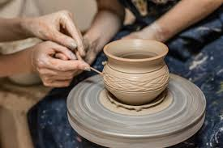
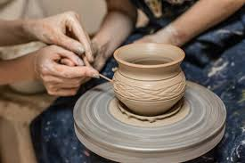
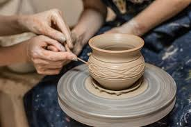

Примеры работ

 

Прикоснись к искусству форм и глины.
На южном берегу озера Иссык-Куль, в тёплой атмосфере юрточной гостиницы, вы можете попробовать гончарное ремесло. Это не студия, а часть неспешного отдыха — мастер покажет основы, и вы сможете создать свой глиняный сосуд или чашу на память.
